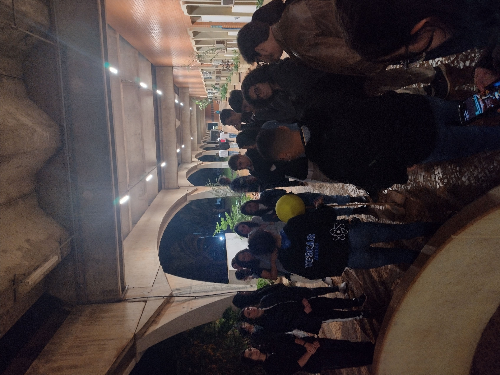

Jornada das Estrelas - jun/2024
Entre os dias 18/06/24 e 20/06/24 ocorreu a XVII edição do evento Jornada das Estrelas.
Nesta edição tivemos:
- Observação do céu com telescópios.
- Visitação ao Observatório a Olho Nu.
- Passeio pelos planetas do Sistema Solar em escala de tamanhos e distâncias.
Público visitante
Esta edição do Jornada das Estrelas contou com uma diversidade de público, foram três escolas que reservaram horários para os seus alunos participarem de todas as atividades oferecidas pelo evento, como também um grupo organizado pela professora Samantha, da UFSCar, de pessoas que necessitavam de acessibilidade em libras. Além destes visitantes garantidos, fomos presenteados com diversas pessoas avulsas, incluindo famílias que vieram participar desta jornada astronômica. O primeiro dia do evento não teve nenhuma reserva de público, então todas as pessoas que compareceram foram em grupos familiares ou de amigos que não quiseram perder a oportunidade de participar das atividades da noite. Famílias com crianças de até 10 anos de vida, alunos da universidade e grupo de jovens da comunidade externa marcaram a primeira noite.
No dia 19 de junho (quarta-feira e segundo dia do Jornada) o público visitante diversificou um pouco, ainda contando com o comparecimento de algumas famílias com suas crianças, assim como ex-alunos da universidade, também recebemos a escola INSA da cidade de Araras, com diversos estudantes do ensino fundamental I e II. As turmas eram muito animadas e com alunos extremamente inteligentes e interessados pelos astros, interagindo a noite inteira com os monitores e sanando todas as suas dúvidas e curiosidades. O grupo com necessidades de acessibilidade em libras também marcou presença neste dia, este grupo de jovens adultos ficaram extremamente envolvidos com a programação do evento, aproveitando a experiência para adquirirem mais conhecimentos sobre astronomia, como também se deslumbrarem com a visão da lua em nosso telescópio.
O último dia do evento foi marcado com a presença expressiva da escola Maria Rosa, uma escola pública da cidade de Araras. Os estudantes que compareceram ao Jornada eram todos do ensino médio e foram acompanhados por alguns professores da escola, esse pessoal ficou impressionado com o que viu em nossos telescópios. A última instituição que compareceu em nossas atividades foi o Colégio Sagrada Família, de Leme, com os seus alunos do ensino médio que demonstraram grande interesse em nossa exposição do sistema solar em escala. Este dia também foi marcado com a presença de familiares de alunos da graduação do campus, assim como os próprios discentes e famílias externas à universidade.
Quantidade de pessoas
A XVII Jornada das Estrelas foi marcada por um número expressivo de visitantes, tanto daqueles que reservaram um horário para sua participação, quanto daqueles que foram por conta própria para o evento. A quantidade de pessoas que vieram por conta própria, sabendo da programação através de divulgação midiática e por influência de amigos foi impressionante, principalmente por famílias com crianças de diversas faixas etárias compareceram para presenciar a experiência única de ver a lua cheia bem de pertinho.
Tivemos alguns horários reservados para três escolas, duas de Araras e uma Leme, que trouxeram seus alunos em peso para expandirem seus horizontes em relação à astronomia. Grupos de amigos, famílias, ex-alunos, alunos de graduação e muitos amantes do céu noturno não perderam a oportunidade de conhecer o nosso espaço voltado para a astronomia dentro da universidade.
Realizando um balanço de todos que estiveram no evento, estimamos que em torno de 400 pessoas compareceram à última Jornada das Estrelas. Esta edição teve uma maior divulgação nas mídias sociais, o que colaborou muito para a presença de todas essas pessoas, mas ainda queremos melhorar nossos meios de comunicação com a comunidade local, para que esta tenha um melhor relacionamento com a universidade pública e tudo o que ela tem a oferecer. O Jornada das Estrelas é um evento público e gratuito que aprecia muito a presença de toda a sociedade, principalmente para espalhar o conhecimento astronômico.
Descrição das atividades
Observatório a Olho Nu
O Observatório a Olho Nu da UFSCar-CCA é uma praça que contém relógios solar e estelar, oito totens informativos que, além de estarem posicionados de forma com que o sol nasça e se ponha atrás de cada um deles a depender da época do ano, também contém informações sobre as estações, os astrônomos e os planetas do nosso sistema solar.
O tour foi iniciado com a apresentação do observatório de uma maneira mais geral, falando da posição dos totens e de como o sol nasce e se põe atrás delas, e de que maneira isso varia ao longo do ano. Em seguida, foi apresentado o relógio solar de maneira breve, já que não foi possível explorá-lo tanto, visto que o evento ocorreu no período noturno. Diferente do relógio estelar, que pode ser muito bem explorado e foi exibido logo após o relógio solar.
Após a apresentação geral dos totens, foi exibida a bússola, mostrando como há um desvio do campo magnético da Terra em relação ao seu eixo de rotação. Em seguida, o público foi direcionado para as esferas celeste e terrestre, e pode-se afirmar que foi uma das partes preferidas da maior parte dos participantes do evento, com respeito ao Observatório a Olho Nu. Observar as constelações e poder interagir com a esfera celeste foi visivelmente algo que prendeu a atenção do público.
Como o Observatório possui 8 totens, mas tínhamos apenas 4 monitores, cada monitor apresentou 2 deles. Sendo assim, o público escolar foi dividido em 4 grupos e foi feito um rodízio para que todos pudessem ouvir um pouco mais sobre as informações presentes em cada uma das placas. As famílias e os grupos menores de pessoas foram orientados a iniciar a apresentação dos totens pelo totem de Mercúrio, por ser o primeiro planeta do sistema solar. Após a apresentação dos totens, o tour foi encerrado e os grupos orientados para a próxima atração ou a finalização do evento.
Um problema que foi enfrentado no tour pelo observatório a olho nu foi a questão do tempo, principalmente com respeito às turmas escolares com maior quantidade de alunos. Os jovens estavam muito curiosos e interessados, o que foi sensacional. Porém, eles faziam muitas perguntas e o tempo previsto não foi suficiente para atender essa demanda. Por este motivo, se faz necessário diminuir as turmas de alunos por visita ao observatório ou até mesmo aumentar o tempo dessa atração.
Passeio dos planetas
Uma das atividades realizadas no evento Jornada das Estrelas foi o passeio dos planetas em escala. O nosso sistema solar foi diminuído em 5 bilhões de vezes para conseguirmos viajar através dele no bloco A da UFSCar no campus Araras, mas mesmo assim, não foi possível ter todos os planetas nessa jornada planetária. Os grupos de visitantes foram acompanhados por um monitor para essa experiência, assim as pessoas obtiveram as informações de proporção de cada elemento do passeio e conseguiram ter melhores dimensões de tamanho em uma escala real. O passeio se iniciou no centro do sistema solar, com a estrela Sol sendo representada por uma bola de isopor de 30 centímetros de diâmetro, mas seu tamanho real é de 1.932.700 quilômetros, foi importante ressaltar para o público que o Sol é uma anã-amarela de tamanho médio e que ao todo são oito planetas que o orbitam, sendo o primeiro deles Mercúrio.
Andando 12 metros do Sol até Mercúrio, essa distância de 58.800.000 quilômetros no espaço, encontramos o planeta sendo exposto por uma bolinha cinza de 1,05 milímetros, que em seu tamanho real é 4.880 quilômetros de diâmetro. Este planeta é o mais rápido do sistema solar, tendo o seu ano 88 dias, e, apesar de ser o mais próximo do Sol, não é o mais quente.
Em uma trajetória de 180.000.00 quilômetros no plano espacial em relação ao Sol, dentro da universidade foram percorridos 23 metros para chegar em Vênus, o segundo planeta do sistema solar. Em nossa escala ele possui um diâmetro de 2,6 milímetros, que seriam 12.000 quilômetros em seu tamanho real. Vênus é o planeta mais quente do sistema solar devido a um efeito estufa que ocorre no planeta em consequência a uma grande quantidade de dióxido de carbono.
O planeta seguinte é a nossa casa, a Terra, que em nosso passeio fica a 32 metros do Sol, que nada mais são do que 150.000.000 quilômetros no sistema solar. A Terra é o único planeta do sistema solar que possui vida e possui um satélite natural, a Lua. A Terra possui um diâmetro de 12.700 quilômetros, mas foi necessária uma bolinha de 2,7 milímetros para que conseguíssemos deixar em escala. Durante a apresentação deste planeta, foi oportuno ensinar aos visitantes a medir a distância do Sol com o dedo mindinho esticado com o braço estendido em direção à estrela, que representa uma distância de 0,5°.
A parada seguinte foi Marte, com uma distância de 228.000.000 quilômetros do Sol e 49 metros do primeiro ponto do passeio. O planeta possui um diâmetro de 6.800 quilômetros, mas nossa bolinha vermelha tinha um diâmetro de 1,4 milímetros. Depois da Terra, é o planeta mais fácil de se estudar, ele possui uma atmosfera rarefeita que permite observar a sua superfície com facilidade.
O último planeta exposto no passeio foi o gigante gasoso, Júpiter. Ao todo, foi necessário percorrer 166 metros para encontrarmos este planeta no campus, uma distância que no espaço seria percorrida em 780.000.000 quilômetros. Júpiter é o maior planeta do sistema solar, sendo tão grande que, para chegarmos próximo a sua massa, teríamos que somar a massa de todos os outros planetas e multiplicar por 2,5! Ele também é o planeta com rotação mais rápida, tendo um diâmetro de 140.000 quilômetros, representado por uma bola pequena de 3,07 centímetros.
Os demais planetas do nosso sistema solar, como Saturno, Urano e Netuno, tiveram que ficar de fora, pois seria inviável as suas posições dentro da universidade, assim, dificultando o acesso dos visitantes à dinâmica apresentada. Todos os planetas foram confeccionados pelos participantes do Programa utilizando massa de modelar e aparatos de medição, como régua e paquímetro, para serem apresentados com a maior precisão possível. Os visitantes dos passeios foram diversos, sendo muitos com presença de grupos de escolas e outros com grupos familiares. O passeio dos planetas foi um grande atrativo para o público, principalmente por trazer uma proximidade física, mas de uma forma indireta, do sistema solar, fazendo com que as pessoas tenham conhecimento da grandiosidade do nosso universo.
Telescópios
A atração dos telescópios, consiste em três telescópios posicionados em linha, em uma região de cimento e fácil acesso, apesar de simples era a principal atração do evento e o local onde foi feita a maioria das observações do céu noturno pelos visitantes, principalmente da Lua, que nessa data específica foi o tema principal do evento. Os três telescópios, eram diferentes entre si; sendo um NexStar 4SE - Celestron, que é altazimutal, motorizado e computadorizado; outro C6 S - Celestron, que é equatorial, motorizado e computadorizado; e, por fim, um SW B300C-Watcher, que é altazimutal e manual. A atração foi gerida por um bolsista encarregado por três monitores (alunos voluntários), e cada um dos monitores era responsável por um dos telescópios. Em acordo prévio na inscrição, foi combinado que os monitores chegassem com 30 minutos de antecedência para aprenderem o manuseio necessário dos telescópios e como colocar os visitantes para observar.
Os dois telescópios motorizados não dependem de ações dos monitores, por isso ficaram em astros mais difíceis de se localizar nos céus, alternando entre várias localizações como Alpha Centauri, “Caixinha De Joias” entre outras. Já o telescópio manual ficou posicionado para a observação da Lua e constantemente precisou ser reposicionado pelo monitor responsável pelo mesmo, para que fosse possível a observação por todos. Assim o público das escolas, a partir de sua chegada, foram divididos em três grupos pelos condutores (alunos voluntários), posicionando-os em três filas, uma em cada telescópio, para que depois pudessem revezar nos outros dois, ou no caso de pessoas sem agendamento que poderiam escolher as filas que queriam entrar. Para cada telescópio o monitor responsável ficava encarregado de apresentar o próprio telescópio e o que seria observado. Todavia houveram algumas adversidades na atração que impediram que a mesma desempenhasse seu potencial total, como a chegada atrasada por parte de alguns monitores, dificuldades técnicas com os telescópios motorizados, onde os mesmos saíam do prumo e a dificuldade de colocar crianças pequenas para observar por conta da altura das mesmas, junto com o fato de só possuirmos um banco para auxiliar no problema. Apesar de tudo foi uma atração muito bem elogiada pelo público em geral, onde a mesma atendeu bem o seu propósito e também foi possível fotografar excelentes imagens que ajudam na divulgação de próximos eventos, aumentam o acervo do projeto e servem de recordação para os visitantes.
Perspectivas para os próximos eventos
Tendo em vista o que foi apontado por cada parte deste relatório, em geral o evento obteve desempenho positivo e esperado, assemelhando-se aos eventos passados, possuindo um bom número de visitantes e retorno agradável dos mesmos. Apesar do retorno positivo, todas as atrações apresentaram características que podem ser alteradas para eventos futuros, para que assim sejam testadas novas formas de se fazer o evento no intuito de aperfeiçoar e melhorar a experiência dos visitantes, a democratização de conhecimento astronômico, tanto social como científico e a experiência dos próprios organizadores. Para cada parte do relatório temos as seguintes sugestões: Observatório: mais monitores (1 para cada placa); deixar a visitação mais livre para público mais velho; maior utilização do globo celeste; Passeio dos Planetas: criar placas informativas sobre os respectivos planetas do passeio e suas escalas para expor do lado dos mesmos; Telescópios: providenciar três bancos adequados para crianças usarem os telescópios; manter em todos os dias um telescópio reproduzindo imagens no retroprojetor; sanar os problemas técnicos dos telescópios motorizados; manter um bolsista no telescópio manual; utilização do apontador laser; Condutores: manter um mínimo de dois condutores por turma dos grupos agendados; Divulgação: fazer a divulgação por meio de outdoor em algum ponto estratégico na cidade de araras; divulgação do evento via rádio ou jornal local; Público: criação de datas separadas para público geral e grupos previamente agendados; Dessa forma é esperado que as alterações propostas sejam aplicadas se possível e sirvam para que o evento “Jornada Das Estrelas” possa evoluir e melhorar para se tornar mais dinâmico e eficiente para com a sua proposta de divulgar e democratizar os conhecimentos científicos e sociais da Astronomia e atingir também objetivos secundários como a divulgação do Campus Araras da UFSCar e contribuir na formação dos envolvidos.
Fotos do evento


Financiamento
Este evento é uma das atividades financiadas pelo CNPq por meio da Chamada CNPq/MCTI/FNDCT 39/2022 “Programa de Apoio a Museus e Centros de Ciência e Tecnologia e a Espaços Científico-Culturais” (processo 407086/2022-6) dentro da Linha 3: Divulgação Científica e Educação Museal.